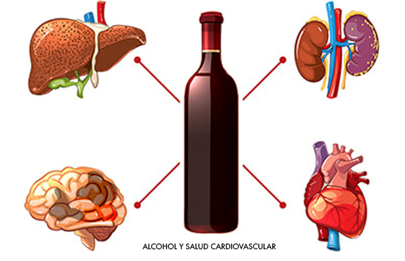

Enfermedades causadas por el alcoholismo
El alholismo puede causar una amplia variedad de enfermedades que afectan distintos órganos y sistemas del cuerpo. Algunas de las más comunes incluyen:
- Enfermedades hepáticas: Hepatitis alcohólica y cirrosis hepática, que pueden llevar a insuficiencia hepática.
- Trastornos cardiovasculares: Hipertensión arterial y fibrilación auricular, aumentando el riesgo de enfermedades cardíacas.
- Problemas digestivos: Gastritis y pancreatitis, que pueden causar dolor abdominal severo y complicaciones graves.
- Cáncer: El consumo excesivo de alcohol está relacionado con varios tipos de cáncer, incluyendo el de hígado, esófago y boca.
- Enfermedades neurológicas y mentales: Deterioro cognitivo, depresión y ansiedad, además de aumentar el riesgo de demencia.
- Problemas dentales: El alcoholismo puede contribuir a enfermedades periodontales y cáncer bucal.

- Organización Mundial de la Salud (OMS). (2018). Global Status Report on Alcohol and Health 2018. Disponible en: https://www.who.int/publications/i/item/9789241565639.
- National Institute on Alcohol Abuse and Alcoholism (NIAAA). (2021). Alcohol’s Effects on Health. Recuperado de: https://www.niaaa.nih.gov/.